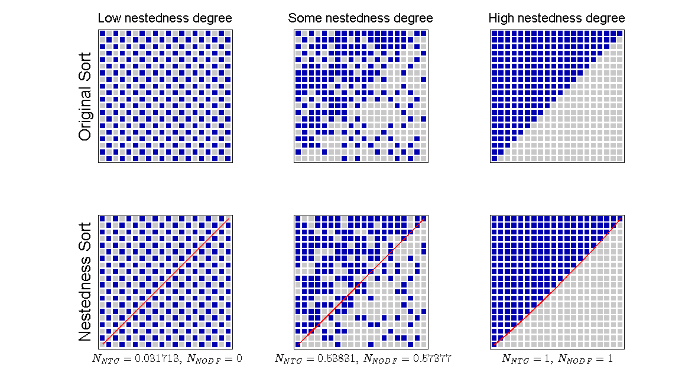

Nestedness describes the extent to which interactions form ordered subsets of each other. There are several indices for quantifying nestedness bimat implements two of the most commonly used methods, namely, NTC (Nestedness Temperature Calculator) (see Atmar et al 1993) and NODF (for Nestedness metric based on Overlap and Decreasing Fill) (see Almeida-Neto et al 2008).
The NODF measure normalizes for matrix size, and thus allows matrices of different sizes to be compared. The nestedness range is $0 \le NODF \le 1$, where 0 indicates an homogeneous matrix having ones in every position and 1 corresponds to a perfectly nested structure. NODF is based on two properties: decreasing fill and paired overlap. NODF measures nestedness across rows by assigning a value $M_{ij}^{\text{row}}$ to each pair $i$, $j$ of rows in the interaction matrix:
\begin{equation} M_{ij}^{\text{row}} = \begin{cases} 0 & \text{if $k_i \le k_j$}\\ n_{ij}/\min(k_i,k_j) & \text{otherwise,} \end{cases} \label{eq.Mrows} \end{equation}where $k_i$ is the number of ones in row $i$, $k_j$ is the number of ones in row $j$, and $n_{ij}$ is the number of shared interactions between rows $i$ and $j$ (so-called paired overlap). Notice that positive contributions to the NODF require pairs of columns satisfying the decreasing fill property, that is, when $k_i > k_j$. A similar term $M_{ij}^{\text{col}}$ is used to compute column contributions. The total nestedness is the sum of columns and row contributions:
\begin{equation} N_{NODF} = \frac{\sum_{ij} M_{ij}^{\text{row}} + \sum_{ij} M_{ij}^{\text{col}}} { m(m-1) /2 + n(n-1)/2}. \end{equation} MATLAB vectorization capabilities allows for very efficient calculation of $M_{ij}^{\text{row}}$ (and its column version): \begin{equation} M_{ij}^{\text{row}} = \frac{(\mathbf{r}_i \cdot \mathbf{r}_j) \left(1-\delta(k_i,k_j)\right)} {\min(k_i,k_j)}, \end{equation} where $\mathbf{r_i}$ is a vector that represents the row $i$ of the adjacency matrix, and $\delta(k_i,k_j)=1$ if and only if $k_i=k_j$. By using this notation, $M_{ij}^{\text{row}}$ can be expressed in terms of matrix multiplications that exploit the implicit parallelism provided by Matlab (see code for details).A `temperature', $T$, of the interaction matrix is estimated by resorting rows and columns such that the largest quantity of interactions falls above the isocline (a curve that will divide the interaction from the non-interaction zone of a perfectly nested matrix of the same size and connectance). In doing so, the value of $T$ quantifies the extent to which interactions only take place in the upper left ($T\approx0$), or are equally distributed between the upper left and the lower right ($T\approx100$). Perfectly nested interaction matrices can be resorted to lie exclusively in the upper left portion and hence have a temperature of 0. The value of temperature depends on the size, connectance and structure of the network. Because the temperature value quantifies departures from perfect nestedness, we define the nestedness, $N_{NTC}$, of a matrix to range from 0 to 1, $N_{NTC}=(100-T)/100$, such that $N_{NTC}=1$ when $T=0$ (in the case of perfect nestedness) and $N_{NTC}=0$ when $T=100$ (in the case when interactions form a ``checkerboard'' when visualized in matrix format).
The next example shows how to detect nestedness using the default algorithm:
matrix = MatrixFunctions.NESTED_MATRIX(20); bp = Bipartite(matrix); bp.nestedness.Detect();
Nestedness NODF: NODF (Nestedness value): 1.0000 NODF (Rows value): 1.0000 NODF (Columns value): 1.0000
We can also change the default algorithm before calculating nestedness, choosing among one of the two options described before:
bp.nestedness = NestednessNTC(matrix); bp.nestedness.Detect();
Nestedness NTC: NTC (Nestedness value): 1.0000 T (Temperature value): 0.0000
Further, there is no need to work directly with a Bipartite instance. The user can also chose to work with a Nestedness instance instead:
%By creating an instance and then calculating nestedness nes = NestednessNODF(matrix); nes.Detect(); %Or by calling a static method: nes2 = Nestedness.NODF(matrix);
Nestedness NODF: NODF (Nestedness value): 1.0000 NODF (Rows value): 1.0000 NODF (Columns value): 1.0000 Nestedness NODF: NODF (Nestedness value): 1.0000 NODF (Rows value): 1.0000 NODF (Columns value): 1.0000
Altough by calculating the nestedness we can already see what are the nestedness results, sometimes we may need to know detailed values. By just typing the name of the Nestedness instance we have access to these values:
nes2
nes2 =
NestednessNODF with properties:
N_rows: 1
N_cols: 1
N: 1
matrix: [20x20 logical]
n_rows: 0
n_cols: 0
independent_rows_cols: 1
done: 1
print_results: 0
Nestedness value (always between 0 and 1)
nes2.N
ans =
1
In this example we will calculate the nestedness of three different degrees of nestedness: (i) and anti nested pattern (which is a perfect modular pattern), (ii) a pattern with some degree of nestedness, and (iii) a perfect nested pattern:
%Creating the matrices matrix_nested = MatrixFunctions.NESTED_MATRIX(20); %perfect nested matrix_modular = MatrixFunctions.BLOCK_MATRIX(2,10); %perfect anti nested matrix_middle = MatrixFunctions.MIX_MATRICES(matrix_nested,matrix_modular); %a combination ntc_nested = Nestedness.NTC(matrix_nested); ntc_modular = Nestedness.NTC(matrix_modular); ntc_middle = Nestedness.NTC(matrix_middle); nodf_nested = Nestedness.NODF(matrix_nested); nodf_modular = Nestedness.NODF(matrix_modular); nodf_middle = Nestedness.NODF(matrix_middle); %Some plot format for all plots plot_format = PlotFormat(); plot_format.use_labels = false; plot_format.cell_color = [0,0,176]/255; plot_format.use_empty_cell = true; plot_format.cell_empty_color = [200,200,200]/255; font_size = 16; %Plotting figure(1); set(gcf,'position', [22,52,1181,664]); subplot(2,3,1); ylabel('Original Sort', 'FontSize', font_size+4); title('Low nestedness degree', 'FontSize', font_size); PlotWebs.PLOT_MATRIX(matrix_modular, plot_format); subplot(2,3,2); title('Some nestedness degree', 'FontSize', font_size); PlotWebs.PLOT_MATRIX(matrix_middle, plot_format); subplot(2,3,3); title('High nestedness degree', 'FontSize', font_size); PlotWebs.PLOT_MATRIX(matrix_nested, plot_format); subplot(2,3,4); ylabel('Nestedness Sort', 'FontSize', font_size+4); PlotWebs.PLOT_NESTED_MATRIX(matrix_modular, plot_format); xlabel(['$N_{NTC} = ', num2str(ntc_modular.N),'$, $N_{NODF} = ',num2str(nodf_modular.N),'$'],... 'FontSize',14, 'interpreter','latex'); subplot(2,3,5); PlotWebs.PLOT_NESTED_MATRIX(matrix_middle, plot_format); xlabel(['$N_{NTC} = ', num2str(ntc_middle.N),'$, $N_{NODF} = ',num2str(nodf_middle.N),'$'],... 'FontSize',14, 'interpreter','latex'); subplot(2,3,6); PlotWebs.PLOT_NESTED_MATRIX(matrix_nested, plot_format); xlabel(['$N_{NTC} = ', num2str(ntc_nested.N),'$, $N_{NODF} = ',num2str(nodf_nested.N),'$'],... 'FontSize',14, 'interpreter','latex');